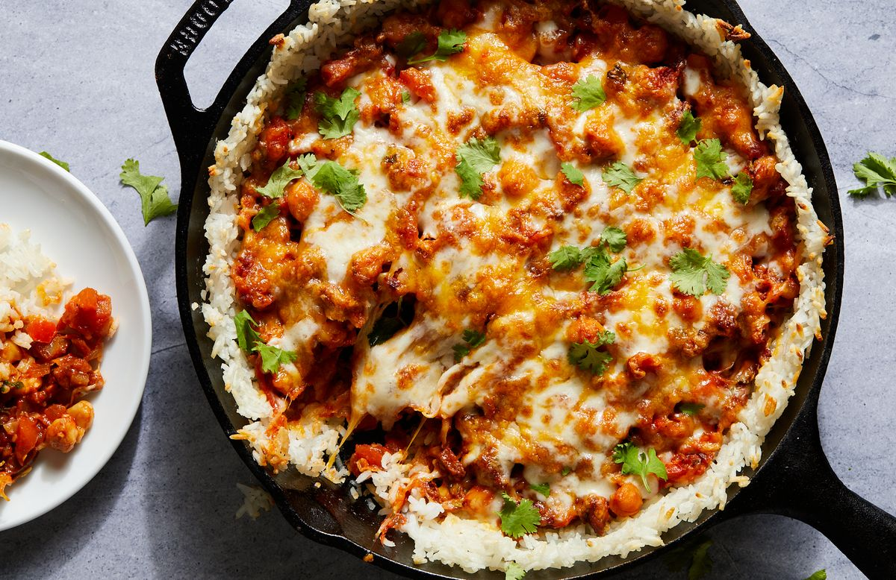

Cheesy Chorizo, Chickpea & Crispy Rice Skillet
Crunchy and golden—and if you don’t know it already, you will after making this recipe—crispy rice is an absolutely wonderful way to enjoy rice. Especially when it turns into a crust and cradles a really delicious cheesy chorizo and chickpea filling. Crisping rice in a little olive oil adds a beautiful textural contrast to steamed rice and additional flavor as the rice crisps and turns golden.
For the crispiest crust, make sure to preheat the skillet first (a good two minutes of preheating usually does the trick). Then be patient and let it crisp; if you're not sure, you can take a spatula and lift up the rice a bit to see if it's turning golden on the bottom. To keep the rice crisp, it's important that chorizo-chickpea filling has thickened enough—if it’s too liquidy, it will make the rice soggy. Smashing some of the chickpeas and reducing the sauce on the stovetop helps ensure you’ll get the texture right every time.
To switch the flavor profile up, substitute another type of cooked sausage for the chorizo. Andouille and chicken sausages are great here, or switch out the chickpeas with cannellini, black bean, or pinto.
Ingredients
- 1 1/3 c. water
- 1 c. jasmine rice
- Kosher salt
- 3 tbsp. extra-virgin olive oil, divided
- 4 oz. dried Spanish-style chorizo, chopped into small pieces
- 1 small sweet onion, finely chopped (about 1 c.)
- 1 medium red bell pepper, stemmed, seeded, and chopped
- 3 cloves garlic, thinly sliced
- 1 (15-oz.) can chickpeas
- 3/4 c. dry white wine
- 1 (15-oz.) can diced tomatoes
- 1 1/2 tsp. sweet paprika
- 1 tsp. dried oregano
- 1/4 c. chopped fresh cilantro leaves, plus more for serving
- 1 1/2 c. Mexican-style shredded cheese (about 6 oz.)
Steps
- Combine water, rice, and 1/4 teaspoon salt in a small saucepan. Bring to a boil over medium-high heat. Reduce heat to low, cover, and simmer until rice is tender and liquid is absorbed, 16 to 18 minutes. Remove from heat, uncover, and let sit at room temperature until ready to use.
- Meanwhile, preheat oven to 425º. In a medium (10") nonstick skillet over medium-high heat, heat 1 tablespoon oil. Add chorizo, onion, bell pepper, and garlic and cook, stirring occasionally, until vegetables are tender, 6 to 8 minutes. Add chickpeas, wine, and 3/4 teaspoon salt. Bring to a boil and cook, stirring occasionally, until wine is mostly absorbed, about 5 minutes.
- Add diced tomatoes and any juices, paprika, and oregano. Reduce heat to medium-low and simmer, crushing about one-quarter of chickpea mixture and tomatoes with the back of a spoon, until sauce is thickened, 4 to 6 minutes. Scrape chorizo mixture into a large heatproof bowl and stir in cilantro. Wipe skillet clean.
- In same skillet over medium-high heat, heat remaining 2 tablespoons oil until shimmering. Add rice to skillet. Using the back of a measuring cup or spoon, press rice into bottom and up sides of skillet, like a pie crust. Cook, undisturbed, until bottom of rice is golden and crisp, 4 to 6 minutes.
- Heat broiler. Fill center of rice crust with chorizo-chickpea mixture and sprinkle cheese over top. Broil until cheese is melted and golden, 1 to 2 minutes. Sprinkle with cilantro.